1 概要・連絡
- 授業の冒頭で「小テスト❺」を実施します。筆記用具を準備しておいてください。
2 準備・案内
- 課題04 (GoogleColab.で動作するプログラムの自由制作) の作品共有
- OneDrive (学内のみ)
2.1 今回の講義の概要
今回の講義では ❶ Git (ギット) のインストール、❷ VS Codeを使った GitHub リポジトリ (=リモートリポジトリ) の新規作成、❸ 変更内容のコミット操作・プッシュ操作、❹ GitHub を用いたソースコードの公開について取り上げます。
この講義の終了時点で、次のことができる状態を目標とします。
- 作業フォルダ、ステージング領域、ローカルリポジトリ、リモートリポジトリの違いを説明できる。
- VS Codeでファイルの変更内容を確認し、必要な変更をステージしてコミットできる。
- ローカルのコミットをGitHubに「プッシュ」し、GitHub側のコミットをローカルに「プル」できる。
- publicリポジトリに公開してはいけない情報を判断できる。
チーム開発を支援する機能や任意の過去バージョンに戻す機能など は、次回以降に段階的に学んでいきます。今回の講義内容について、既に十分に知識・理解がある学生は、昨年度の資料を先読みしておいてください。
- 2025年度 第15回講義 Git/GitHub 2, HTML/CSS, GitHub Pages
- 2025年度 第16回講義 Git/GitHub 3, チーム開発
2.2 まずは Git と GitHub のイメージをざっくりと掴む
開発初心者にとっては、Git も GitHub も非常に難しい概念です (典型的な「つまずき」のポイントです)。まずは、ざっくりとイメージを掴んでいきましょう。
2.2.1 Git (ギット) とは
まずは、4コマ図解 (正確さよりも分かりやすさを重視して作成) で Git についてザックリと概要を掴んでみましょう。
2.2.2 GitHub (ギットハブ) とは
まずは、4コマ図解で GitHub についてザックリと概要を掴んでみましょう。
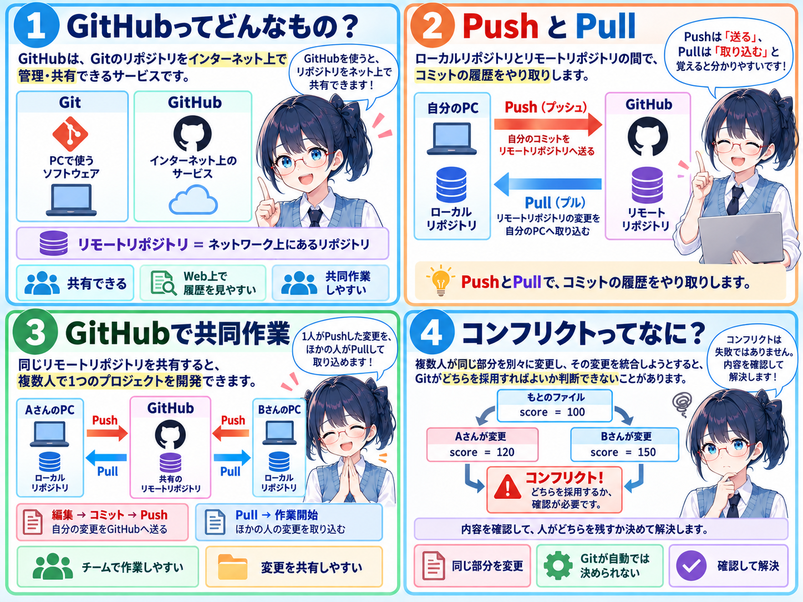
2.2.3 定着確認
- 定着確認：Git
の説明として最も適切なものはどれか。記号で答えよ。答え B
- A. Git とは、プログラムを記述して実行するためのプログラミング言語である。
- B. Git は、ファイルの変更履歴を記録・管理するソフトウェアであり、インターネットに接続していなくても使用できる。
- C. Git は、インターネット上にファイルを保存するウェブサービスであり、使用には常にインターネット接続が必要である。
- D. Git とは、プロジェクトフォルダ内のファイルを自動的に最新版へ更新するソフトウェアである。
- 定着確認：Git
における「コミット」の説明として最も適切なものはどれか。記号で答えよ。答え
C
- A. ファイルを保存する操作の別名であり、ファイルを保存するたびに自動的に実行される。
- B. 新しい状態を記録する代わりに、それ以前の履歴をすべて削除する操作である。
- C. その時点のプロジェクトフォルダの内容を、1つの履歴として記録する操作である。
- D. プロジェクトフォルダをインターネット上へ送信し、公開する操作である。
- 定着確認：Git
における「リポジトリ」の説明として最も適切なものはどれか。記号で答えよ。答え
A
- A. 複数のコミットを履歴として蓄積・管理する場所であり、以前の状態との比較や、以前の状態への復元に利用できる。
- B. 最新のコミットだけを保存する場所であり、新しいコミットを作成すると古いコミットは削除される。
- C. PCの電源を切るまで、編集中のファイルを一時的に保存しておく場所である。
- D. 必ずインターネット上に作成される保存場所であり、PC内には作成できない。
- 定着確認：GitHub
の説明として最も適切なものはどれか。記号で答えよ。答え D
- A. PCにインストールし、インターネットに接続せずにファイルの変更履歴を記録するソフトウェアである。
- B. Pythonなどで作成したプログラムを自動的に修正し、エラーを取り除くウェブサービスである。
- C. PC内にあるすべてのファイルを、自動的にインターネット上へバックアップするウェブサービスである。
- D. Gitのリポジトリをインターネット上で管理・共有し、共同作業を支援するウェブサービスである。
- 定着確認：Push と Pull
の説明として最も適切なものはどれか。記号で答えよ。答え B
- A. Pushはリモートリポジトリの変更を自分のPCへ取り込み、Pullは自分のコミットをリモートリポジトリへ送る操作である。
- B. Pushは自分のコミットをリモートリポジトリへ送り、Pullはリモートリポジトリの変更を自分のPCへ取り込む操作である。
- C. PushとPullは、どちらも自分のPC内だけでコミットを作成する操作である。
- D. Pushはファイルを保存する操作、Pullは以前の状態へ戻す操作である。
- 定着確認：GitHub
を利用した共同作業の説明として最も適切なものはどれか。記号で答えよ。答え
A
- A. 複数人が同じリモートリポジトリを共有し、各自がPushとPullを使って変更をやり取りすることで、1つのプロジェクトを共同で開発できる。
- B. 共同作業では、全員が1台のPCを交代で使用しなければならない。
- C. リモートリポジトリを共有すると、各自のPCにローカルリポジトリを用意する必要はなくなる。
- D. 共同作業では、変更内容が衝突しないように、コミットを作成できる人を常に1人に限定する必要がある。
- 定着確認：コンフリクトの説明として最も適切なものはどれか。記号で答えよ。答え
C
- A. インターネットに接続できないため、GitHubを開けない状態のことである。
- B. 複数人が同じリモートリポジトリを利用すると、変更箇所に関係なく必ず発生するエラーである。
- C. 複数人が同じ部分を別々に変更したときなどに、Gitがどちらの変更を採用すべきか判断できない状態であり、人が内容を確認して解決する必要がある。
- D. Gitが古い変更を自動的に削除し、常に新しい変更だけを残す処理のことである。
2.3 Gitの概要
Git は、ファイルの変更履歴を記録・比較・復元するための 分散型バージョン管理システム (ソフトウェア) です。PCにインストールして利用するもので、ネットワークに接続していない状態でも変更履歴を記録することができます。
GitHub は、Gitのリポジトリをネットワーク上に保存し、共有・公開・共同開発などを支援する ウェブサービス です。GitとGitHubは別のものであり、Gitだけでローカルの変更履歴を管理することも可能 です。
プロンプト例
私は高専の情報系学科の2年です。授業で、GitとGitHubを扱う回がきたのですが「Git は、ファイルの変更履歴を記録・比較・復元するための 分散型バージョン管理システム です。通常はPCにインストールして利用し、ネットワークに接続していない状態でもローカルリポジトリへ変更履歴を記録できます。」とか説明され、いきなりつまずきました。まったくイメージがつかめません。中学生でも分かるように翻訳してください。
さらに「GitHub は、Gitのリポジトリをネットワーク上に保存し、共有・公開・共同開発などを支援するウェブサービスです。GitとGitHubは別のものであり、Gitだけでローカルの変更履歴を管理することも可能です。」という説明がでてきました。中学生でも分かるように翻訳してください。
Git/GitHub は、就職・進学してからは無論、高専在学中にも 「各種セミナー」や「ハッカソン」「インターンシップ」「ポートフォリオづくり」「就職のエントリ」 などの場面で利用します。ある程度の仕組みを分かって Git/GitHub を使えるようになっておかないと、非常に困ること (場合によっては開発チームのメンバーに迷惑をかけること) になるので、しっかりと学ぶようにしてください。
なお、Git/GitHub では「リポジトリ」「コミット」「ステージング」「プル」「プッシュ」「コンフリクト」などの専門用語が頻出することにくわえ、仕組み (概念) も初学者にとっては 極めて難解なもの になります。これらは、Git/GitHub を実際に利活用していくなかで 段階的に理解を深めて いってください。
特に、学び始めてからしばらくの間は、専門用語を一度に暗記しようとせず、実際の操作と対応させながら段階的に理解してください。調べてもすぐに理解できない用語があっても問題ありません。
Git/GitHub 関連の専門用語について
野球にも「イニング」「タイムリーエラー」「セーフティバント」「チェンジアップ」など単語を聞いただけでは内容が理解も想像もできない専門用語が多数存在します。野球を経験したことがない人は、これら専門用語について丁寧に説明を受けても、イメージを掴んだり、理解したりすることはなかなかできません。しかし、用語の意味が分からなくても (拙いながらも) 実際に野球をプレーすること は可能で、それを通じて専門用語のイメージをつかみ、理解を深めることができます。
これは Git/GitHub においても同様です。学習初期では、専門用語の意味を理解しようとするよりも、まずは、それをひとつの概念や操作・処理として受け入れて、 失敗を含めた実際の経験や利用のなかで (ある程度の時間をかけながら) イメージや理解を深めていく ことが求められます。
バージョン管理とは何か、何がうれしいのか
「バージョン管理とは何か」また「バージョン管理ができると何がうれしいのか」といったことについては、ウェブ記事やYouTubeなどを参照 してください。分かりやすい解説が掲載されています。
3 Gitのダウンロードとインストール・設定
以降、PC に Visual Studio Code (VS Code) がインストールされている前提での Gitのインストール作業になります。VS Codeのインストール・初期設定については 第09回講義 を参照してください。
既に PC に Git がインストールされている場合は、再インストールは 不要 です (そのまま利用してください) 。ただし、テキストの解説には必ず目を通して、必要に応じて設定などを変更・修正 してください。
Git の最新バージョンについて
2026年9月11日現在の Git for Windows の最新安定版は
v2.55.0.windows.5 です。最新版は Gitの公式サイト で確認してください。
3.1 gitがインストール済みであるかの確認方法
Git が PC にインストールされているかどうかは ターミナル から
git -v のコマンドを実行して確認できます。以下の例のように
バージョン情報の応答 があれば、既に Git がインストールされています。
一方で「‘git’ は、内部コマンドまたは外部コマンド、操作可能なプログラムまたはバッチ ファイルとして認識されていません。」のような応答があれば、Gitがインストールされていないか、Gitへのパスが反映されていません。
C:\Users\xxxx>git -v
git version 2.55.0.windows.5Gitのバージョンアップ
既に PC にGit for Windowsがインストールされている場合、コマンドプロンプトから
git update-git-for-windows を実行することで
バージョンのアップデート ができます。
C:\Users\xxxx>git update-git-for-windows
Git for Windows 2.51.0.windows.1 (64-bit)
Update 2.55.0.windows.5 is available
Download and install Git for Windows v2.55.0.windows.5 [N/y]? y上記に対して y
を入力すると最新版へのアップデートが開始されます。基本的に最新版を利用するようにしてください。
Gitを再インストールする場合の注意点
通常、この操作は必要ありません。設定ファイルを削除すると、それまで使用していたGitの設定が失われるので注意してください
Gitを再インストールする場合は、Windowsの「設定」-「アプリ」-「インストールされているアプリ」から Git を選択して「アンインストール」してから、再度、下記のインストール作業を行ってください。
また
Gitの旧設定を引き継がずに新規インストールに近い状態にしたい場合は、まずユーザー設定ファイル
(下記のパス) を .gitconfig.bak
のような名前でバックアップしてください。設定内容を確認せずに削除することは推奨しません。
C:\Users\xxxx\.gitconfigここでxxxxは各自のアカウントに読み替え
プロンプト例
Windows で Git の再インストールしたいです。現在の設定を一切引き継がずに新規インストールに近い状態にしたいです (だだし、念のために現在設定のバックアップは残しておきたい)。どのようにすればよいか解説してください。
3.2 GitHub の設定を確認
GitHub にログインしておきます。
このあと行うGitの初期設定では、コミット (＝変更内容を記録した履歴のひとつひとつ) に記録する「作者名」と「メールアドレス」の設定が必要になります。その準備として、ここではGitHubから提供される コミット用のメールアドレス を確認しておきます。
就活等に利用するGitHubアカウントの準備
事前連絡しているように、就活・進学活動、インターンシップ応募に使うための GitHubアカウント を準備できているでしょうか？ このアカウント（リポジトリ）は、インターンシップ、就職、進学において、皆さんの ポートフォリオ ( 取組み経験やスキル (実力・実績) を証明するための作品集 ) という位置づけになります。
そのため、ユーザーネームは慎重に設定してください。1年次の実験実習などで既にGitHubアカウントを作成している場合は、原則として、そのアカウントを継続して使用してください。GitHubアカウントを持っていない場合は、この機会に作成しておきましょう。ユーザーネームは変更可能ですが、変更に伴う手間もあるため、長く使うことを前提に適切なものを設定してください。
この授業で作成したプログラムのほか、他の授業 (例えれば「情報」など) や実験実習の課題も、このGitHubアカウントのリポジトリに提出していってもらいます (少なくとも教員やクラスメイトには閲覧されるものになります) 。
GitHubアカウントは作り直さず、継続して使う
GitHubアカウントは、特別な事情がない限り、削除したり作り直したりせずに 同じアカウントを継続して使用してください。
GitHubをポートフォリオとして見てもらうときは、完成した作品だけでなく、いつ頃から、どのような学習や制作を継続してきたか も大切な情報になります。早い時期から同じアカウントを使い続け、少しずつ実績を積み重ねていることは、自分の成長過程を示す材料になります。
ユーザーネームが気に入らないという理由だけで、アカウントを作り直す必要はありません。ユーザーネームは、同じアカウントを維持したまま変更できます。
中級者向け：ユーザーネーム変更と活動の見え方
アカウントを作り直すと、以前のアカウントにあるリポジトリ、Issues、Pull Requestなどは自動的には新しいアカウントへ集約されません。
一方、同じアカウントの ユーザーネームを変更するだけなら、それまでの活動履歴を保ったまま使い続けられます。変更するときは、事前に GitHub公式ドキュメント を確認してください。
プロフィールに表示される緑のマス目は、一般に「草」と呼ばれる Contribution graph です。これは、GitHub上でどのくらい継続的に活動しているかを視覚的に示す、一つの目安になります。
▼ 例1：年間を通じて、定期的に活動している場合
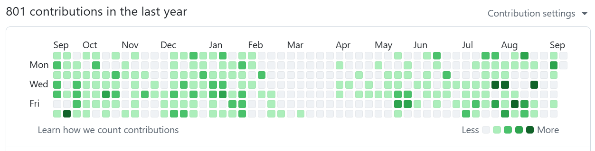
▼ 例2：ある期間だけ活動し、その後は使っていない場合
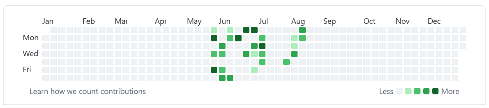
1枚目からは、年間を通じて定期的に学習や制作を続けていることが読み取れます。一方、2枚目は、ある期間だけ活動し、その後は使われていないように見えます。
企業の採用担当者がポートフォリオとして確認するなら、継続して学習や制作に取り組んでいることが伝わる 1枚目のほうが、当然よい印象を持たれやすいでしょう。就職活動の直前だけGitHubを使うのではなく、普段から同じアカウントで少しずつ活動を積み重ねていくことが大切です。
GitHubのメール設定のページ(https://github.com/settings/emails) にアクセスして「Keep my email addresses private」と「Block command line pushes that expose my email」の項目 (ページの下部) にチェックを入れておいてください。
そして、Keep my email addresses private に記載されている
コミット用のメールアドレス (...@users.noreply.github.com)
をコピーし、テキストエディタなどに貼付けておいてください。このメールアドレスは、Gitをインストールした後の設定で使用します。
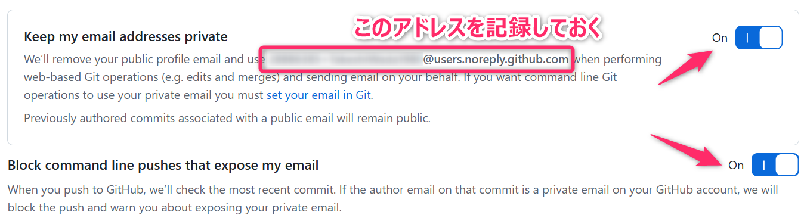
なお、上記の設定には、次の意味があります。
- Keep my email addresses private:
GitHub上で作成するコミットに、GitHubから付与された
...@users.noreply.github.comのメールアドレスを使用し、個人のメールアドレスを公開しないようにします。 - Block command line pushes that expose my email: 個人のメールアドレスが作者情報に含まれる直近のコミットをプッシュしようとしたとき、GitHubがプッシュを拒否して警告します。
既に公開したコミットの作者情報は、この設定を有効にするだけでは書き換わりません。詳しくは コミット用メールアドレスの公式説明 を参照してください。
3.3 git のダウンロード
Gitの公式サイト にアクセスして、Windows (64bit版・Standalone Installer) の 最新版の Gitインストーラ をダウンロードしてください。約60MB程度のファイルです。
- トップページからダウンロードページにたどりつけない場合は https://git-scm.com/download/win に直接アクセスしてください。
PCにアプリをインストールするためのプログラムを インストーラ (Installer) といいます。
- Windowsでも ARM系のCPU (Snapdragon) や、Mac (MacOS) を使用している場合は、それぞれに対応したインストーラを使用してください。
3.4 git のインストール
ここでは Git-2.55.0.5-64-bit.exe
を対象にインストール手順を説明します。Gitのバージョンが異なる場合は、適宜、内容を読み替えて作業を進めてください。
ダウンロードした Git-2.55.0.5-64-bit.exe
をダブルクリックしてインストーラを起動します。
以前にGitをインストールしたことがあるPCでは、過去の設定がインストーラの初期選択へ反映される場合があります。そのため、「既定値のまま」と説明されている画面でも、現在の選択がスクリーンショットと同じであることを確認しながら進めてください。
3.4.1 git のライセンスの確認
- Please read the following important information before continuing.
- 先に進む前に以下の大切な情報を必ず確認してください。
- When you are ready to continue with Setup, click Next.
- セットアップを続行する準備ができたら「次へ」をクリックします。
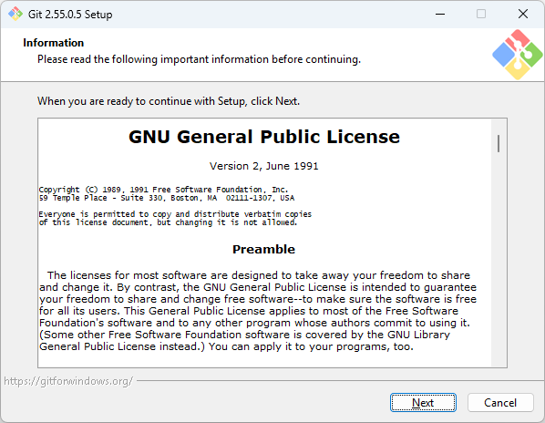
ここでは設定を変更する必要はありません。ライセンス (GNU General Public License : GPL) について確認し、「Next」を押して次に進みます。GNU は「グヌー」や「グヌニュー」と発音します (牛的な動物の Gnu は「ヌー」と発音しますが、ここでは「グ」をつけて発音します)。
Gitは GNU General Public License version 2 (GPLv2) で公開されています。ただし、Gitをインストールして利用したり、Gitで自分のプログラムの変更履歴を管理したりするだけで、自分のプログラムをGPLで公開する義務が生じることはありません。
GPLで公開されたプログラムやライブラリを自分のソフトウェアへ組み込み、その成果物を第三者へ配布する場合には、ソースコードの提供などの条件が関係することがあります。具体的な条件はGPLの版、結合方法、配布方法、例外条項などによって異なるため、実際に利用するときは対象ソフトウェアのライセンス本文と GNUの公式FAQ を確認してください。
3.4.2 インストール先の設定
- Where should Git be installed?
- Git をどこにインストールしますか?
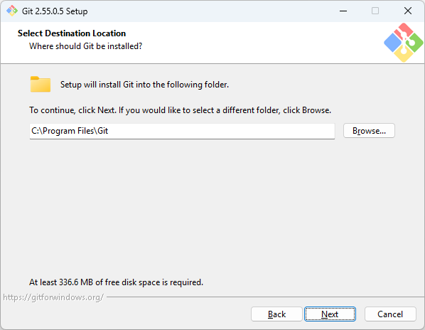
Gitをインストールするフォルダを設定します。本授業では、既定の
C:\Program Files\Git のまま「Next」を押してください。
C:\Program Files\はWindows用のアプリを置く標準的な場所であり、特別な理由がなければ変更する必要はありません。画面の例では、インストールに約337MBの空き容量が必要です。
3.4.3 【要変更】インストールするコンポーネントの選択 🚨
- Which components should be installed?
- どのコンポーネント (機能) をインストールしますか?
- Select the components you want to install; clear the components you do not want to
install. Click Next when you are ready to continue.
- インストールしたいコンポーネントを選択し、インストールしたくないコンポーネントを選択解除します。続行する準備ができたら「次へ」をクリックします。
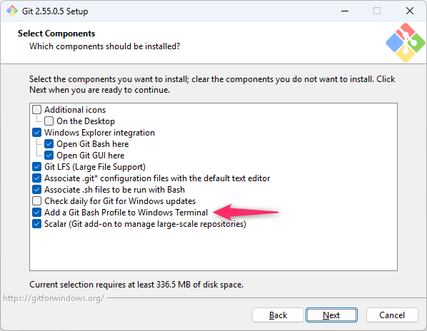
この画面では操作が必要 🚨 既定のチェック項目はそのままにして、「Add a Git Bash Profile to Windows Terminal」にチェックを追加してから「Next」を押してください。
この画面では、Git本体と一緒に導入する機能や、Windowsへ追加する連携機能を選びます。主な項目の意味は次のとおりです。
- Additional icons / On the Desktop: デスクトップにGitのアイコンを追加します。本授業ではWindows TerminalやVS CodeからGitを使用するため、既定どおりチェックを入れません。
- Windows Explorer integration: エクスプローラーでフォルダを右クリックしたときに、「Open Git Bash here」や「Open Git GUI here」を表示します。
- Git LFS (Large File Support): 通常のGitでは扱いにくい大きなファイルを管理するための機能です。
- Associate .git* configuration files with the default text editor: Gitの設定ファイルを既定のテキストエディタに関連付けます。
- Associate .sh files to be run with Bash: 拡張子が
.shのシェルスクリプトをBashで実行できるように関連付けます。 - Check daily for Git for Windows updates: Git for Windowsの更新を毎日確認します。本授業では、授業中に突然更新を促されないよう、既定どおりチェックを入れません。
- Add a Git Bash Profile to Windows Terminal: 🚨 Windows TerminalからGit Bashを起動できるようにします。本授業では、この項目だけチェックを追加します。
- Scalar (Git add-on to manage large-scale repositories): 大規模なリポジトリを扱いやすくするGitの追加機能です。今回の授業では直接使用しませんが、既定でチェックされているため、そのままで構いません。
注意
「Add a Git Bash Profile to Windows Terminal」にチェックを入れることで、Windows TerminalのメニューからGit Bashを選択できるようになります。
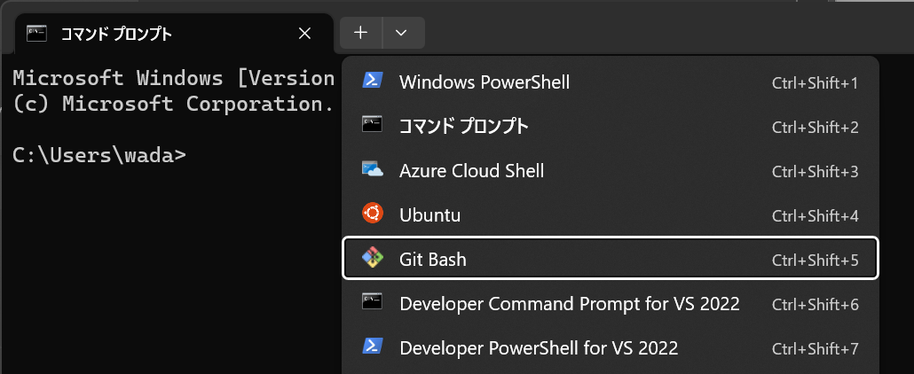
3.4.4 スタートメニューのフォルダ名称の設定
- Setup will create the program’s shortcuts in the following Start Menu folder.
- セットアップにより、次のスタートメニューフォルダーにプログラムのショートカットが作成されます。
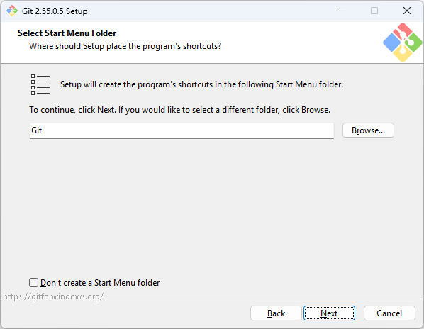
スタートメニューから「すべてのアプリ」に進んだときのフォルダ名を設定します。本授業では、既定の
Git のまま「Next」を押してください。分かりやすい標準の名前であり、Git
Bashなどのショートカットを見つけやすくなるためです。
3.4.5 【要変更】git で使用する既定のテキストエディタの設定 🚨
- Choosing the default editor used by Git.
- Git で使用するデフォルト (既定) のテキストエディタの選択
- Which editor would you like Git to use?
- どのエディタを使用したいですか?
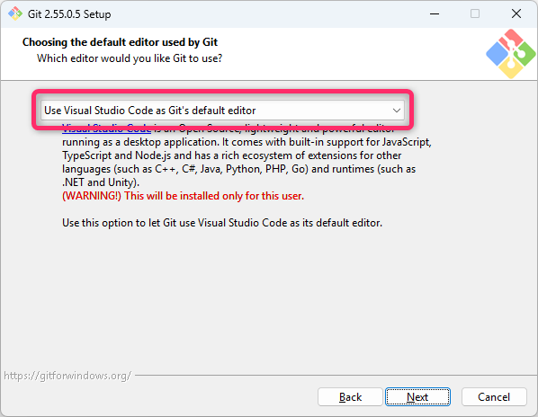
この画面では操作が必要 🚨 プルダウンを開き、「Use Visual Studio Code as Git’s default editor」を選択してください。
- Use Visual Studio Code as Git’s default editor
- Visual Studio CodeをGitの既定のエディタとして使用する
ここで選ぶのは、Gitがコミットメッセージなどの文章を編集するときに起動するエディタです。本授業では普段から使用するVS Codeに統一します。
特に「Visual Studio Code」と「Visual Studio Code Insiders」の選び間違いに注意🚨してください。なお、これらは事前にVS Codeがインストールされていないと選択できません。
画面に表示されている「(WARNING) This will be installed only for this user.」は、見つかったVS Codeが現在のWindowsユーザーだけを対象にインストールされている、という注意です。このPCを現在のユーザーで利用する場合は問題ありません。
拘りがある場合は「Vim」などの別のエディタを設定しても問題ありません。
ここで設定したデフォルトテキストエディタはどこで使用されるのか
デフォルトエディタは、コマンドラインからコミットメッセージを付けずに
git commit
を実行したときや、マージコミットのメッセージを編集するとき、対話的リベースを行うときなどに使用されます。コンフリクトを解消するエディタやマージツールは、これとは別に設定できます。
3.4.6 【要変更】初期ブランチ名称の設定 🚨
- Adjusting the name of the initial branch in new repositories
- 新規リポジトリにおける「初期ブランチ名」の変更
- What would you like Git to name the initial branch after “git init”?
- 「git init」の実行後、「初期ブランチ」に何という名前を付けますか?
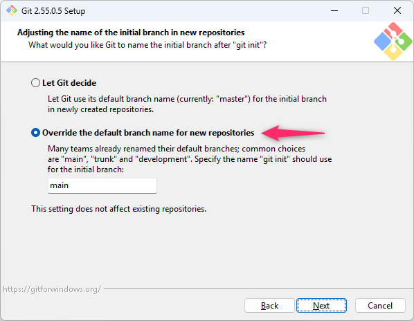
この画面では操作が必要 🚨 「Override the default branch
name for new
repositories」のラジオボタンを選択してください。テキストボックスには最初から
main と入力されているため、文字を書き換える必要はありません。
- Let Git decide
- Gitに決定させる（画面に記載されている現在の初期値は
master）
- Gitに決定させる（画面に記載されている現在の初期値は
- Override the default branch name for new repositories
- 新しいリポジトリの初期ブランチ名を、下の欄で指定した名前にする
ブランチは、変更履歴を枝分かれさせて管理する仕組みです。ここでは、git init
で新しいリポジトリを作成したときの、最初のブランチ名を設定します。GitHubでも新規リポジトリのデフォルトブランチ名として
main
が使用されるため、本授業では名称を統一します。この設定は、既に存在するリポジトリのブランチ名には影響しません。
3.4.7 パス (環境変数) の設定
- How would you like to use Git from the command line?
- コマンドラインからGitをどのように使用しますか?
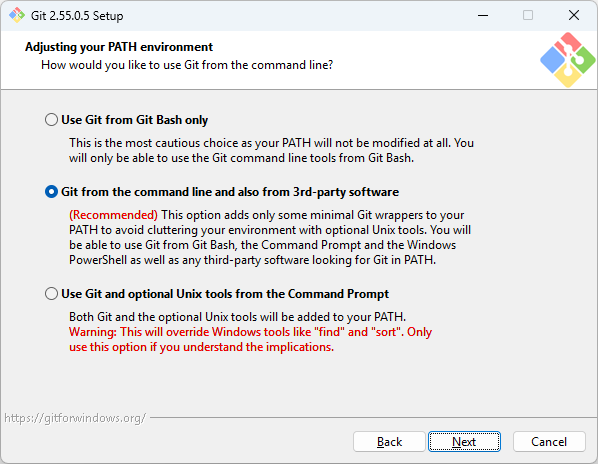
この画面は、既定で選択されている「Git from the command line and also from 3rd-party software」のまま「Next」を押してください。
- Git from the command line and also from 3rd-party software
- コマンドラインからも、外部のソフトウェアからもGitを使用する
この設定では、Gitを見つけるために必要な最小限の情報が、Windowsの環境変数 PATH
に追加されます。これにより、Git Bashだけでなく、コマンドプロンプト、PowerShell、VS
Codeなどからも git コマンドを実行できるようになります。
- (Recommended) This option adds only some minimal Git wrappers to your PATH to avoid
cluttering your environment with optional Unix tools. You will be able to use Git from Git
Bash, the Command Prompt and the Windows PowerShell as well as any third-party software
looking for Git in PATH.
- (推奨) このオプションでは、追加のUnixツールをむやみにPATHへ加えず、Gitを呼び出すための最小限のラッパープログラムだけをPATHに追加します。これにより、Git Bash、コマンドプロンプト、Windows PowerShell、そしてPATH内でGitを検索するサードパーティソフトウェアからGitを利用できます。
プロンプト例
Gitのインストールの途中で次のようなメッセージが表示されました。この内容について日本語で補足を加えながら説明してください。Git初心者向けを想定してください。
This option adds only some minimal Git wrappers to your PATH to avoid cluttering your environment with optional Unix tools. You will be able to use Git from Git Bash, the Command Prompt and the Windows PowerShell as well as any third-party software looking for Git in PATH.
3.4.8 【要変更】HTTPS通信に使用するSSL/TLSライブラリの選択 🚨
- Choosing HTTPS transport backend
- HTTPS通信に使用する仕組みの選択
- Which SSL/TLS library would you like Git to use for HTTPS connections?
- Git において HTTPS 接続に使用する SSL/TLS ライブラリはどちらにしますか?
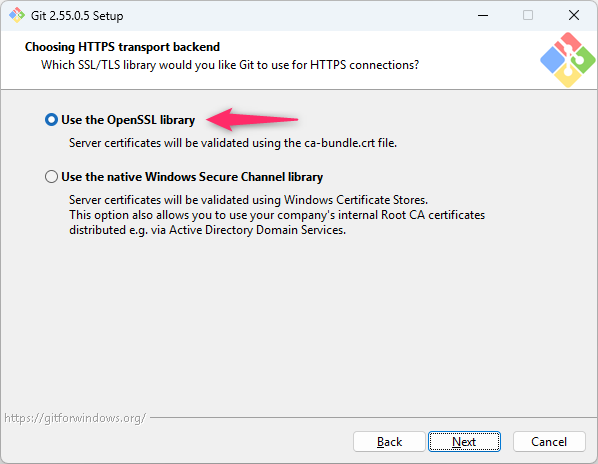
この画面では操作が必要 🚨 「Use the OpenSSL library」が選択されていることを確認してください。別の項目が選択されている場合は、このラジオボタンへ変更してから「Next」を押します。
- Use the OpenSSL library
- OpenSSLライブラリを使用する
- Server certificates will be validated using the
ca-bundle.crtfile. - サーバー証明書を、Gitに付属する
ca-bundle.crtファイルを使って検証する
- Use the native Windows Secure Channel library
- Windows標準のSecure Channelライブラリを使用する
- Server certificates will be validated using Windows Certificate Stores.
- サーバー証明書を、Windowsの証明書ストアを使って検証する
Gitは、GitHubとのHTTPS通信が安全な相手との通信であることを、サーバー証明書を使って確認します。この画面では、その確認に使用する仕組みを選びます。本授業では環境をそろえるため、Gitに付属する証明書情報を利用する OpenSSL を使用します。学内や企業のネットワークで独自の証明書が使用されている場合は、Windowsの証明書ストアを利用する設定が必要になることもあります。
プロンプト例
Git for Windowsのインストール中に「Use the OpenSSL library」と「Use the native Windows Secure Channel library」の選択が出てきました。先生からはOpenSSLを選ぶように言われましたが、そもそも何を選んでいるのか分かりません。
ca-bundle.crt、サーバー証明書、Windows Certificate Storesという言葉の意味も含めて、高校生にも分かるように説明してください。また、学校や会社のネットワークではWindows Secure Channelのほうが適する場合があるのはなぜですか？
3.4.9 【要変更】改行コードに関する設定 🚨
- How should Git treat line endings in text files?
- git においてテキストファイルの行末をどのように処理しますか?
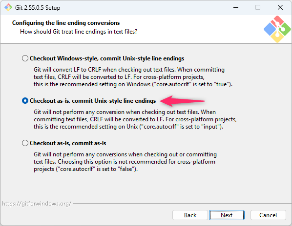
この画面では操作が必要 🚨 「Checkout as-is, commit Unix-style line endings」のラジオボタンを選択してから「Next」を押してください。
- Checkout as-is, commit Unix-style line endings
- チェックアウト時には改行コードを変換せず、コミット時にはUnix形式の改行コードにそろえる
テキストファイルの改行コードには、Windowsでよく使われる CRLF
と、LinuxやmacOSでよく使われる LF
があります。内容が同じでも改行コードが異なると、Gitでは多数の行が変更されたように見えることがあります。将来的に
DockerでLinuxコンテナを利用することや、Windows以外の環境と共同開発することを見越して、コミットするファイルを
LF にそろえます。VS Codeは LF
のファイルも問題なく編集できます。
- Git will not perform any conversion when checking out text files. When committing text
files, CRLF will be converted to LF. For cross-platform projects, this is the recommended
setting on Unix (
core.autocrlfis set toinput).- Gitはテキストファイルをチェックアウトするときには改行コードを変換しません。コミットするときにはCRLFをLFへ変換します。この選択により
core.autocrlf=inputが設定されます。
- Gitはテキストファイルをチェックアウトするときには改行コードを変換しません。コミットするときにはCRLFをLFへ変換します。この選択により
なお、複数人で扱うプロジェクトでは、各PCの設定だけに依存せず、リポジトリの
.gitattributes
で改行コードを指定する方法が確実です。この方法は後続の授業で扱います。
プロンプト例
Git for Windowsのインストールで「Checkout as-is, commit Unix-style line endings」を選ぶように言われました。
CRLFとLF、checkoutとcommit、core.autocrlf=inputがそれぞれ何を意味しているのか、初心者向けに説明してください。設定が合っていないと、複数人での開発やWindowsとLinuxをまたぐ開発でどのような問題が起きるのか、具体例も示してください。
3.4.10 ターミナルエミュレータの構成
- Which terminal emulator do you want to use with your Git Bash?
- Git Bash で使用するターミナルエミュレータはどちらにしますか?
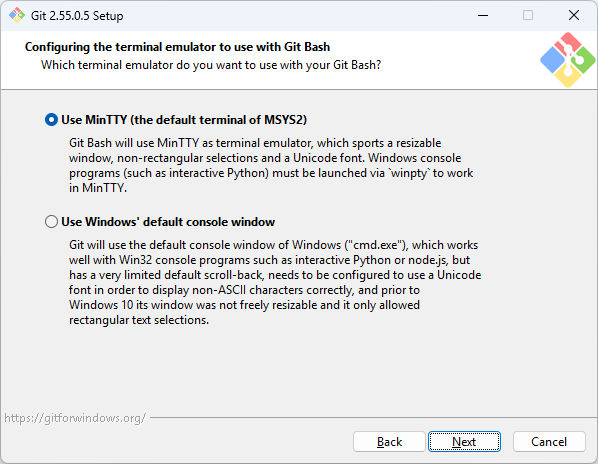
この画面は、既定で選択されている「Use MinTTY (the default terminal of MSYS2)」のまま「Next」を押してください。
- Use MinTTY (the default terminal of MSYS2)
- MSYS2の既定のターミナルであるMinTTYを使用する
MinTTYは、Git Bashを単独で起動したときに使用されるターミナルです。ウィンドウサイズの変更やUnicode文字の表示などに対応しており、Git Bashの標準的な環境として利用できるため、既定値のままにします。本授業で主に使用するVS Code内のターミナルやWindows Terminalそのものを選ぶ設定ではありません。
- Git Bash will use MinTTY as terminal emulator, which sports a resizable window,
non-rectangular selections and a Unicode font. Windows console programs (such as interactive
Python) must be launched via ‘winpty’ to work in MinTTY.
- Git Bashは、ウィンドウのサイズを変更でき、非矩形の選択ができ、ユニコードフォントをサポートしている MinTTY というターミナルエミュレータを使用します。Windows のコンソールプログラム（例: 対話型Python）は、MinTTY で動作させるためには ‘winpty’ を介して起動する必要があります。
3.4.11 git pullのデフォルト動作設定
- Choose the default behavior of ‘git pull’. What should ‘git pull’ do by default?
- git pull にはデフォルトではどんな動作をさせますか?
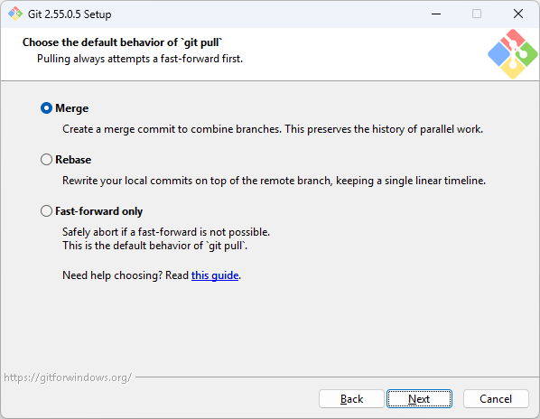
この画面は、既定で選択されている「Merge」のまま「Next」を押してください。
- Merge
- 取得した変更を、現在のブランチへマージする
- Create a merge commit to combine branches. This preserves the history of parallel work.
- ブランチを統合するためのマージコミットを作成します。これにより、並行して進めた作業の履歴が保たれます。
git pull
は、リモートリポジトリの変更を取得し、現在のブランチへ取り込む操作です。Merge
を選ぶと、可能な場合は履歴をそのまま前へ進め、履歴が分岐している場合はマージによって統合します。本授業では、既存のコミットを書き換える
Rebase よりも履歴の変化を追いやすいため、この既定値を使用します。
プロンプト例
Git for Windowsのインストール中に、
git pullの動作として「Merge」「Rebase」「Fast-forward only」という3つの選択肢が表示されました。それぞれを選ぶと履歴がどのように変わるのか、簡単なコミット履歴の例を使って説明してください。また、Git初心者の授業で「Merge」を選ぶ理由も教えてください。
3.4.12 資格情報マネージャの選択
- Which credential helper should be configured?
- どの資格情報ヘルパーを構成する必要がありますか?
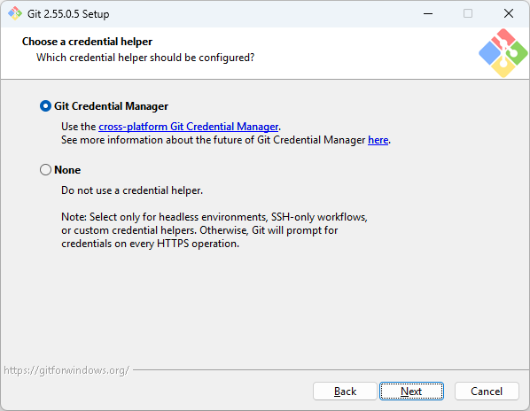
この画面は、既定で選択されている「Git Credential Manager」のまま「Next」を押してください。
- Use the cross-platform Git Credential Manager.
- 複数のOSに対応したGit Credential Managerを使用する
- Note: Select only for headless environments, SSH-only workflows, or custom credential
helpers. Otherwise, Git will prompt for credentials on every HTTPS operation.
- 「None」は、画面を持たない環境、SSHだけを使う運用、独自の資格情報ヘルパーを使う場合などに限って選択します。それ以外では、HTTPSで操作するたびにGitが認証情報の入力を求めます。
GitHubへプッシュするときには、誰が操作しているのかを確認する認証が必要です。Git Credential Managerは、ブラウザを使ったGitHubへのサインインを補助し、認証情報をWindowsの仕組みで安全に管理します。操作のたびにユーザーネームや認証情報を入力する手間を減らせるため、この既定値を使用します。
3.4.13 追加オプションの設定
- Which features would you like to enable?
- どの機能を有効にしますか?
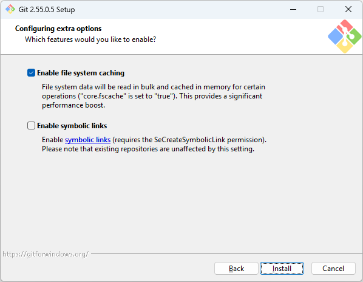
この画面は、既定どおり「Enable file system caching」にチェックを入れ、「Enable symbolic links」にはチェックを入れない状態のまま「Install」を押してください。ここで実際のインストールが始まります。
- Enable file system caching
- ファイルシステムのキャッシュを有効にする
- Enable symbolic links
- シンボリックリンクを有効にする
ファイルシステムのキャッシュを有効にすると、Gitがファイルの状態を調べる処理を高速化できます。一方、シンボリックリンクは別のファイルやフォルダを参照する特殊な仕組みで、Windowsでは権限や設定が必要になる場合があります。本授業では使用しないため、チェックを入れません。
- File system data will be read in bulk and cached in memory for certain operations
(“core.fscache” is set to “true”). This provides a significant performance boost.
- ファイルシステムデータは一括で読み取られ、特定の操作のためにメモリにキャッシュされます。「core.fscache」が「true」に設定されます。これにより、パフォーマンスが大幅に向上します。
3.4.14 完了
インストールが完了すると、次のような画面になります (スクリーンショットは
2.51.0 のものです)。「Finish」を押下してダイアログを閉じてください。
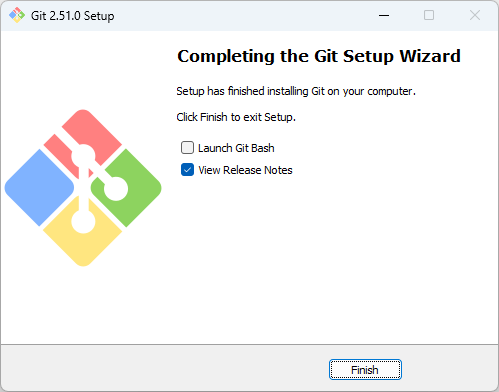
インストール前から開いていたターミナルやVS
Codeがある場合は、一度終了して起動し直してください。それでも git --version
が認識されない場合はPCを再起動してください。
3.5 インストール後の Git の設定 (重要🚨)
Gitでコミットを作成するための作者情報と、本授業で使用する基本設定を確認します。
既に Git をインストール済みの場合も、このセクションの内容を必ず確認してください。
スタートボタンを右クリックして「ターミナル」を起動し、ターミナルのタブを「コマンドプロンプト」に切り替えます。この作業に管理者権限は必要ありません。
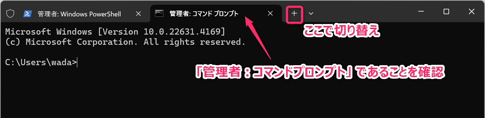
中級者向け：設定値と設定元の確認
Gitの設定には、PC全体へ適用される「システム設定」、そのユーザーへ適用される「グローバル設定」、特定のリポジトリだけに適用される「ローカル設定」があります。同じ項目が複数の場所にある場合は、基本的に ローカル設定、グローバル設定、システム設定 の順に優先されます。
次のコマンドを ひとつずつ 実行して、「設定されている値」と「その設定が読み込まれたファイル」を確認してみてください。
git config --show-origin --get core.editor
git config --show-origin --get core.autocrlf
git config --show-origin --get init.defaultBranch
git config --show-origin --get credential.helper実行例は、次のようになります。
PS C:\Users\xxxx> git config --show-origin --get core.autocrlf
file:C:/Program Files/Git/etc/gitconfig input項目が未設定の場合は何も表示されません。大文字・小文字を区別せず、次の値になっていることを確認してください。
- core.editor:
code --wait、またはVS Codeの実行ファイルと--wait - core.autocrlf :
input - init.defaultBranch:
main - credential.helper:
managerまたはGit Credential Managerを示すパス
値が異なる場合や未設定の場合は、次のようなコマンドでグローバル設定を追加します。グローバル設定の変更には管理者権限は必要ありません。
git config --global core.editor "code --wait"
git config --global core.autocrlf input
git config --global init.defaultBranch maincredential.helper はGit for Windowsのインストーラによって設定されます。Git
Credential Managerが選択肢に出ない、または認証画面が繰り返し表示される場合は、Git for
Windowsのインストール内容を確認してください。
Gitの設定ファイル
代表的な設定ファイルの保存場所は次のとおりです。
- システム設定:
C:\Program Files\Git\etc\gitconfig - グローバル設定:
C:\Users\xxxx\.gitconfig - ローカル設定: プロジェクトフォルダ内の
.git\config
設定ファイルを直接編集するよりも、git config コマンド、または
git config --global --edit を使用する方法を推奨します。
3.5.1 コミットの作者情報を設定【重要設定】🚨
Gitのコミットという操作には、その「作者名」と「作者メールアドレス」を記録する必要があります。その設定を行ないます。
まず、本セクションの解説を最後まで読んでから、次のコマンドを1つずつ実行して「グローバル設定」に作者情報を追加してください。
git config --global user.name "K.Taro"
git config --global user.email "12345678+GitHubAccountName@users.noreply.github.com"
git config --global core.quotepath false- 上記の
K.Taroの部分は、コミットの作者名として公開してよい名前に書き換えてください。GitHubのユーザーネームと同じにすることを推奨します (変更してもよい)。 12345678+GitHubAccountName@users.noreply.github.comの部分は先に確認しておいたコミット用のメールアドレスに書き換えてください。- ここでは あらかじめ「メモ帳」などのテキストエディタ上に「コマンド」を書いておき、それをターミナルに貼付けること をお勧めします。
次のコマンドをひとつずつ実行して、設定した値を個別に確認してください。
git config --global --get user.name
git config --global --get user.email
git config --global --get core.quotepathuser.email
に設定するメールアドレスがGitHubアカウントに関連付けられていると、GitHubはプッシュされたコミットをそのアカウントの活動として関連付けられます。
core.quotepathについて
core.quotepath=false にすると、git status
などの出力でASCII以外の文字を含むパスが、原則として \nnn
形式に置き換えられず、そのまま表示されます。ただし、正しく表示できるかどうかはターミナルの文字コードやフォントにも依存します。
中級者向け: Gitの「グローバル設定」の確認
ここまでの設定によって、C:\Users\xxxx\.gitconfig
には、おおむね次のような内容が追加されているはずです。設定の順序や core.editor
のパス表記は環境によって異なります。
[core]
editor = code --wait
autocrlf = input
quotepath = false
[init]
defaultBranch = main
[user]
name = K.Taro
email = 12345678+GitHubAccountName@users.noreply.github.com4 リモートリポジトリの発行・変更内容のコミット
ここからは、VS Codeを使って、次の操作を体験していきます。ローカルに作成したプロジェクトフォルダの内容と変更履歴をGitHubへ公開し、ローカルリポジトリとリモートリポジトリの関係を確認します。
- プロジェクトフォルダ
GitHub-Testを作成する。 README.mdを作成する。- VS Codeの「GitHubに公開」を使い、ローカルリポジトリの初期化、最初のコミット、GitHub上のリモートリポジトリ作成、プッシュを行う。
README.mdを変更し、差分を確認してステージする。- ステージした変更をコミットし、そのコミットをGitHubへプッシュする。
上記の操作では、ファイルや変更履歴が次の順に移動します。操作するたびに「いま、どこまで記録・共有されたか」を確認してください。
- 作業フォルダ: 編集中のファイルがある場所
- ステージング領域: 次のコミットに含める変更を選ぶ場所
- ローカルリポジトリ: コミットとして変更履歴を記録する場所
- リモートリポジトリ (GitHub): コミットをネットワーク上で共有・公開する場所
これらの違いは、説明を読むだけで一度に覚えるよりも、実際の操作結果と対応させることで理解しやすくなります。
なお、現在注目を集めている AI駆動開発ツール (Claude Code、ChatGPT Codex、GeminiCLI、Devinなど) は、利用者が Git/GitHub を普通に使えることを前提 に設計されています。Git/GitHub が使えることは、AI時代のエンジニアとして活躍するための基礎スキルとも言えます。
「リポジトリ」とは
リポジトリ (直訳すると収納庫) とは、プロジェクトを構成するファイルやフォルダ、その変更履歴を保管しておく場所を意味します。PCのローカルストレージに作成・配置するリポジトリを「ローカルリポジトリ」、GitHubなどのネットワークに作成・配置するリポジトリを「リモートリポジトリ」と言います。
Gitは分散型バージョン管理システムなので、仕組み上、特別な「中央」が必須なわけではありません。ただし、チームで共有先として使用するリモートリポジトリを、運用上「中央リポジトリ」と呼ぶことがあります。
「コミット」とは
コミットとは、プロジェクトに含まれるファイルやフォルダの変更 (新規作成や削除を含む) を記録する行為、あるいは 記録そのもの を意味します。
「プッシュ」とは
プッシュとは、ローカルリポジトリの変更内容をリモートリポジトリにアップロードすることを意味します。
4.1 プロジェクトフォルダの作成
前回講義までにプロジェクトフォルダを作成してきたフォルダ (
C:\Users\xxxx\Documents\2026-Programming1 や
C:\Projects\2026-Programming1など) のなかに GitHub-Test
という名前のフォルダ (プロジェクトフォルダ) を作成し、VS Codeでオープンします。
フォルダ位置は任意でOKですが、フォルダの「名前」は、必ずこの
GitHub-Test にしてください
(別の名前にしてしまうと、以下で読み替え作業が必要になります)。なお、フォルダをVS
Codeでオープンする方法は 第09回講義のプロジェクトフォルダの作成
参照してください。
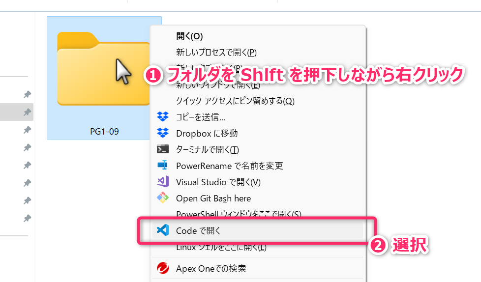
フォルダアイコンの「真上」にカーソルを置いて右クリックしてください。フォルダが選択されていても、そのフォルダ以外の上で右クリックすると意図した動作になりません。
VSCodeが起動したら、以下のスクリーンショットのように、必ず GitHub-Test が
プロジェクトのルート (最上位階層)
になっていることを確認してください。そうなっていない場合、以下のすべての操作で想定外のトラブルが発生します。
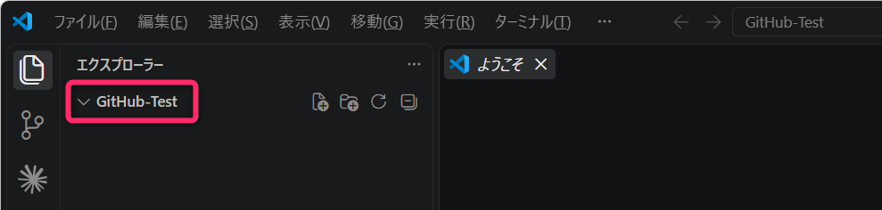
4.2 ファイルの追加
VS Code上から README.md
というマークダウン形式のファイルを新規作成し、以下の内容を記述して保存してください。マークダウン形式
(Markdown記法) はGoogle Colab (Jupyter)
のテキストセルのフォーマットとして既に学習済みです。忘れてしまった場合はウェブ検索して再学習してください。
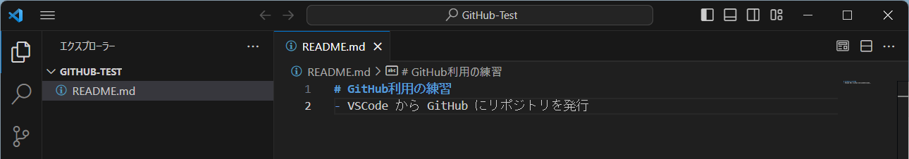
保存操作も、忘れずに行なってください。
4.3 リモートリポジトリの発行
VS Codeのウィンドウの左側にならぶアイコンから「ソース管理」を選択し、パネルから GitHubに公開 のボタンを押下します。
この操作では、VS Codeが必要に応じて git init
を実行してローカルリポジトリを初期化し、選択したファイルで最初のコミットを作成します。さらにGitHub上にリモートリポジトリを作成し、リモート名
origin を設定して、最初のコミットをプッシュします。
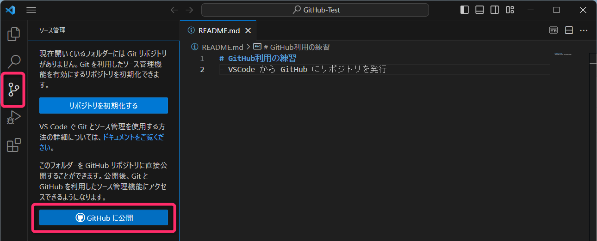
次のダイアログが表示されるので「許可」を押下します。
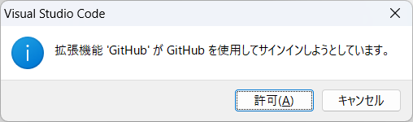
ウェブブラウザが自動起動し、GitHubへのログインやVS Codeの認可を求められます。画面の案内に従ってサインインしてください。設定状況によっては、パスワードのほかに2要素認証やパスキーによる確認が必要です。既にサインイン済みの場合は、ログイン画面が表示されないこともあります。
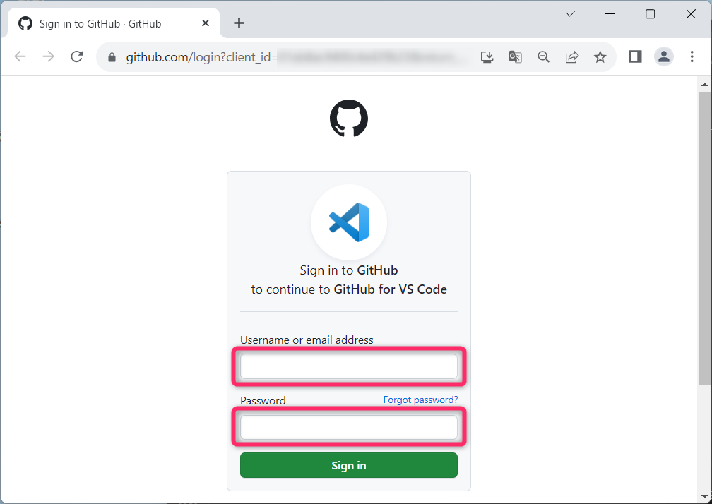
ウェブブラウザに、次のようなダイアログが表示されたら「Visual Studio Code を開く」のボタンを押下してください。
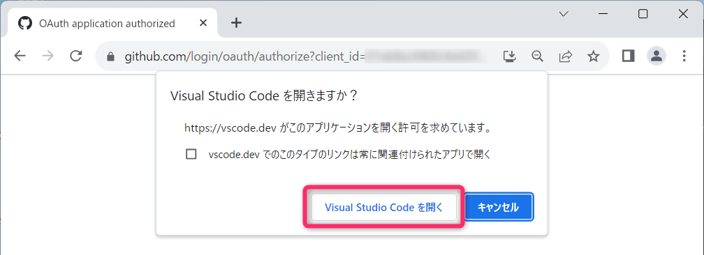
次のようなダイアログが表示されたら「開く」のボタンを押下してください (このダイアログが表示されない場合もあります)。
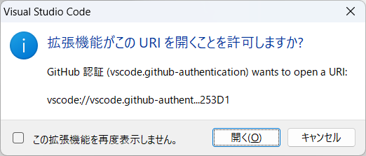
VS Codeのウィンドウの上部に以下のような選択肢が表示されるので「Publish to GitHub
public repository ….」を選択してください。これは、このプロジェクトフォルダを
GitHub-Test という名前のpublicリポジトリとしてGitHubに発行 (Publish)
する、という意味になります。
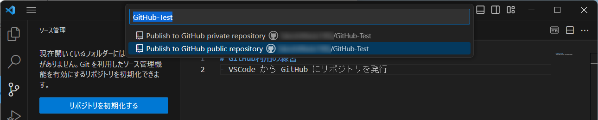
publicリポジトリへ公開してはいけないもの
publicリポジトリは、インターネット上の誰でも閲覧できます。氏名・住所・電話番号などの個人情報、パスワード、APIキー、アクセストークン、秘密鍵、公開を許可されていない課題や資料を含めないでください。
秘密情報を一度コミットすると、後からファイルを削除しても過去のコミットに残ります。この実習では、内容を確認した
README.md だけを公開してください。
以下のように README.md
にチェックがついていることを確認して「OK」を押下します。この
README.md というファイルを GitHub に発行 (Publish) するという意味になります。
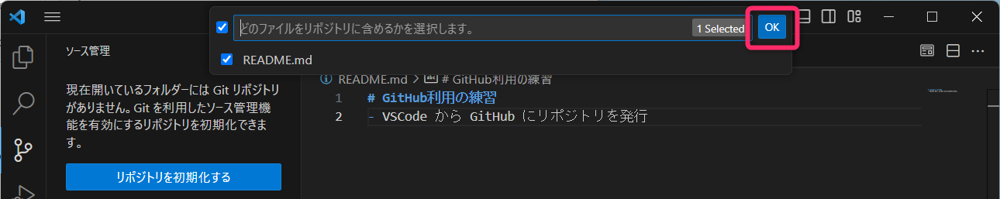
次のダイアログが表示される場合は「Sign in with your browser」を押下します。
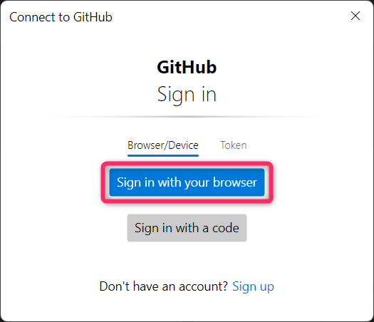
ウェブブラウザの画面が自動的に次のように変わります。GitHubへの再ログインや認可を求められたときは、画面の案内に従って操作してください。認証後に白い画面が表示された場合でも、VS Codeへ戻ると処理が続いていることがあります。
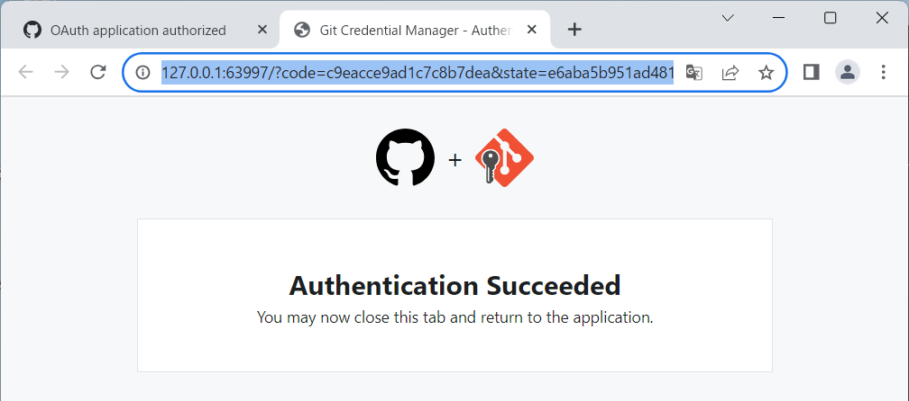
Authentication Succeeded = 認証成功
VS Codeに、以下のような通知「GitHubに “XXXX/GitHub-Test” リポジトリが正常に発行されました」が表示されます。通知は時間が経つと自動的に消えます。見逃した場合は、次の手順でGitHub上のリポジトリを直接確認してください。
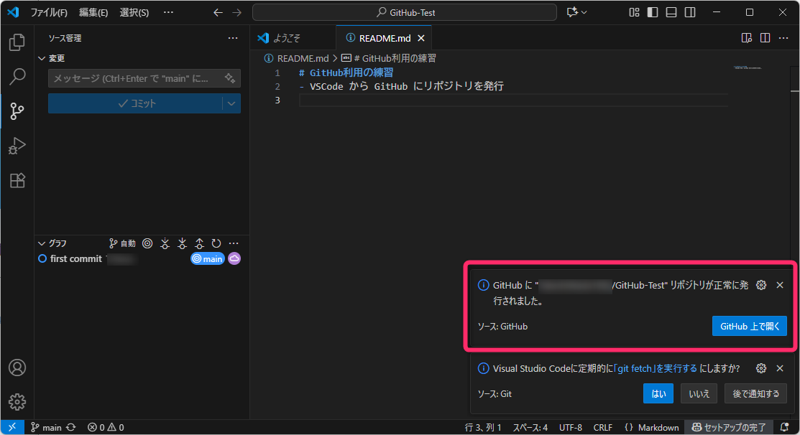
4.4 GitHub に正常発行されていることを確認
プロジェクトフォルダの内容 (=README.md) が、各自の GitHub アカウントの
GitHub-Test というリポジトリに正常に発行されたことを確認します。
ウェブブラウザから https://github.com/XXXX/GitHub-Test つまり GitHub の
GitHub-Test リポジトリにアクセスして、次のように README.md
が表示されることを確認してください (GitHub
でマークダウンファイルはレンダリングされて画面表示されます)。
- URLの
XXXXには各自のGitHubのユーザーネーム (≠表示名) を入れてください。
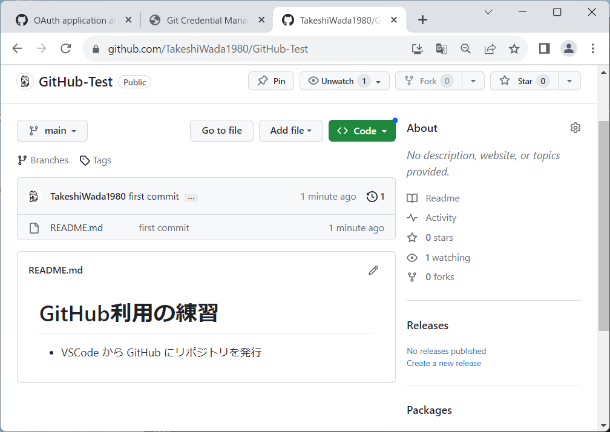
4.5 ファイルを変更してコミット・プッシュ
プロジェクトフォルダに含まれる README.md に変更をくわえて、その変更を
コミット (=変更を記録) して、さらに、それを
プッシュ
(=ローカルリポジトリの内容をリモートリポジトリにアップロード) していきます。
以下のように README.md にテキストを追記して 保存 してください
(必ず保存処理をしてください)。
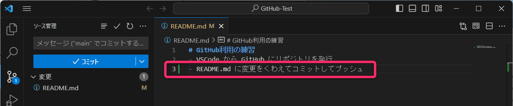
ソース管理のパネルで、まず「変更」グループの README.md
をクリックし、変更前と変更後の 差分
を確認してください。意図した変更だけであることを確認したら、README.md
横の「+」をクリックします。
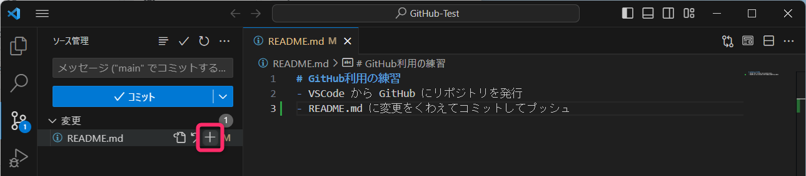
この操作は ステージング
といい、そのファイルの現在の変更を「次のコミットに含める変更」として選択することを意味します。VS
Codeのソース管理パネル内で README.md
が「変更」グループから「ステージされている変更」のグループに移動したことを確認してください。
「ステージング」とは
ステージングとは、変更したファイルを コミットの準備として選択 (ステージ) すること を意味します。git では、ファイルの変更を直接コミットするのではなく、まずその変更をステージングエリアに追加し、その後でコミットするという流れをとります。
つづいて、コミットメッセージ (必須・空欄にできません)
を入力します。コミットメッセージには、変更内容を端的に表すような文章を書きます。ここでは
update README.md とします
(コミットメッセージには日本語を使用することもできます)。
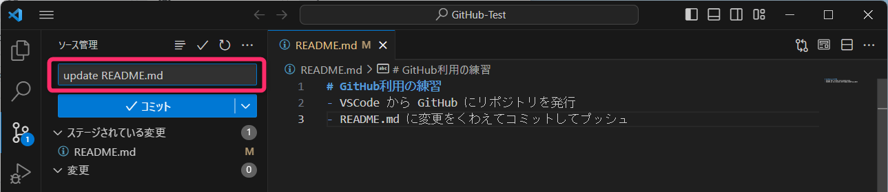
コミットボタンの右側をクリックして「コミットして同期」を選択します。コミットして同期 とは、コミット、プッシュ、プル (フェッチとマージ) という一連の操作・処理を実行することを意味します。
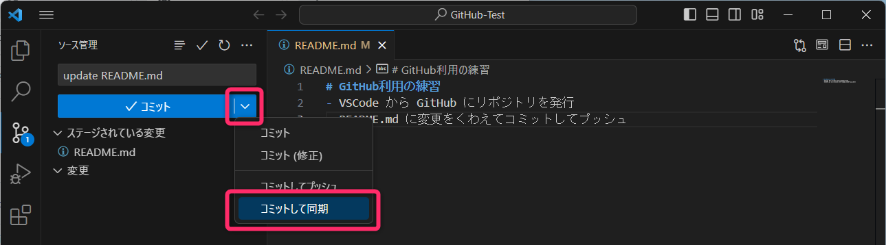
もし、以下のようなダイアログが表示されたときは、「OK」もしくは「OK, Don’t Show Again」を選択してください。
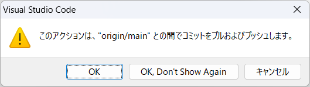
- コミット: ファイルの変更内容をローカルリポジトリに変更履歴として記録すること。
- プッシュ: ローカルリポジトリにある変更履歴を、リモートリポジトリにアップロードすること。
- プル: リモートリポジトリのコミットを取得し、現在のローカルブランチへ反映すること。通常はフェッチの後にマージまたはリベースを行います。本授業の設定ではマージを使用します。
ウェブブラウザから、再度 https://github.com/XXXX/GitHub-Test にアクセスして
README.md が更新されていることを確認します。
「変更の同期」とは
VS Codeの「変更の同期 (Sync Changes)」は、最初にプルし、その後にプッシュ を行う便利な操作です。今回はコミットが保存される場所を区別するために、コミットとプッシュを別々に実行しました。操作に慣れた後は「変更の同期」を使用しても構いません。
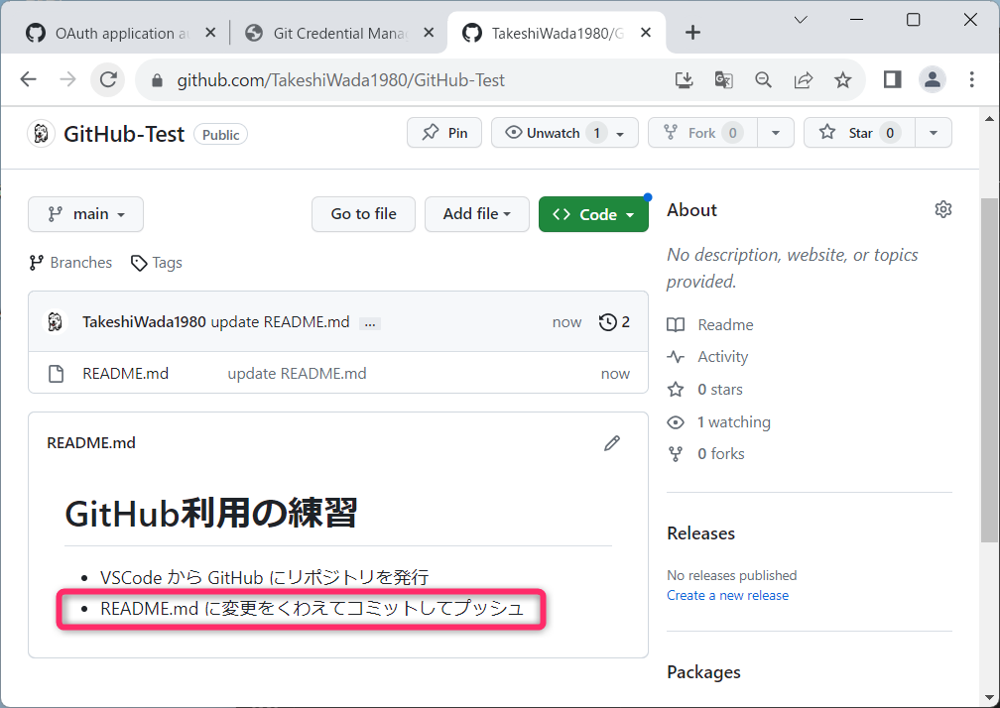
5 リモートリポジトリでのファイル変更と同期
今度は、GitHub (リモートリポジトリ) 側で README.md
に変更をくわえてコミットして、それをローカル側で同期させてみます。
次のように GitHub で README.md を編集モードに切り替えます。
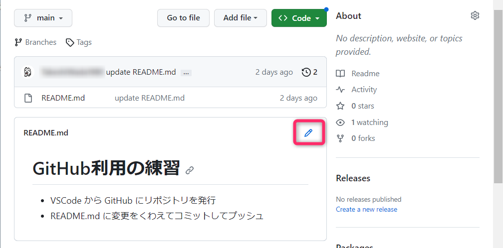
次のように４行目に「GitHub（リモートリポジトリ）で README.md
を直接編集してコミット」とテキストを追記して、右上の「Commit
changes」のボタンを押下します。
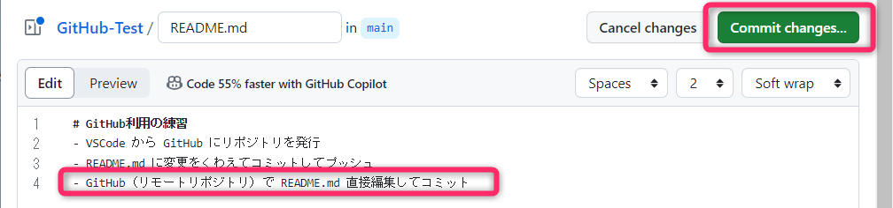
ダイアログが表示されるので、次のようにコミットメッセージを記入して「Commit changes」を押下し、変更をコミットします。
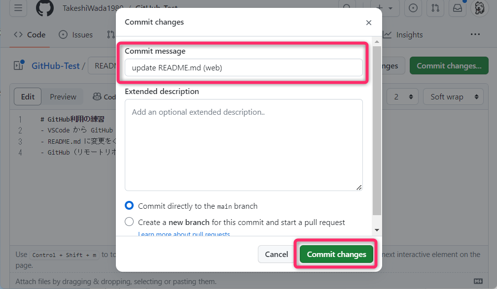
ブラウザをリロードすると、GitHub 上で変更が反映されていることが確認できます。
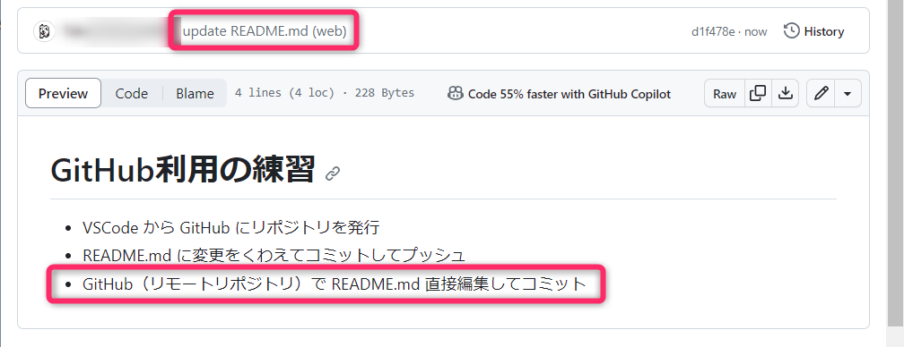
VS Codeに戻ります。この時点では、リモートリポジトリで行なった README.md
の変更はローカルのファイルにまだ反映されていません。この状態では、リモートリポジトリにのみ新しいコミットがあります。
同期させるためには プル という操作が必要で、これは画面下のアイコンをクリックすることで行ないます。
git/GitHub では、Googleドキュメントのようにリアルタイムの自動同期はされないこと に注意してください (プログラム開発では手動による同期のほうが何かと都合がよいのです)。
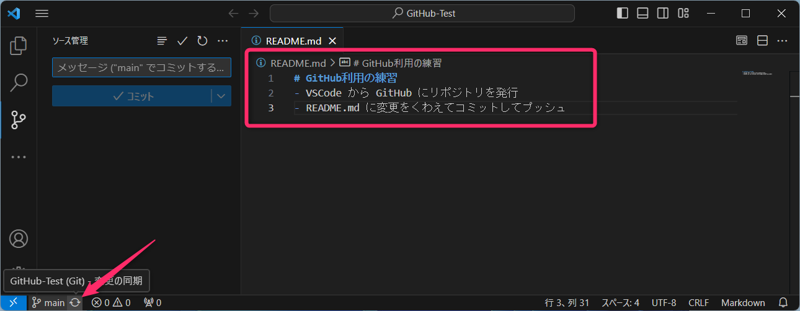
「プル」とは
プルとは、リモートリポジトリの新しいコミットを取得し、現在のローカルブランチへ反映する操作です。内部的には、コミットを取得する フェッチ と、取得した履歴を反映する マージ または リベース が行われます。
同期が成功すると、以下のようにローカルリポジトリ側にも変更が反映されます。
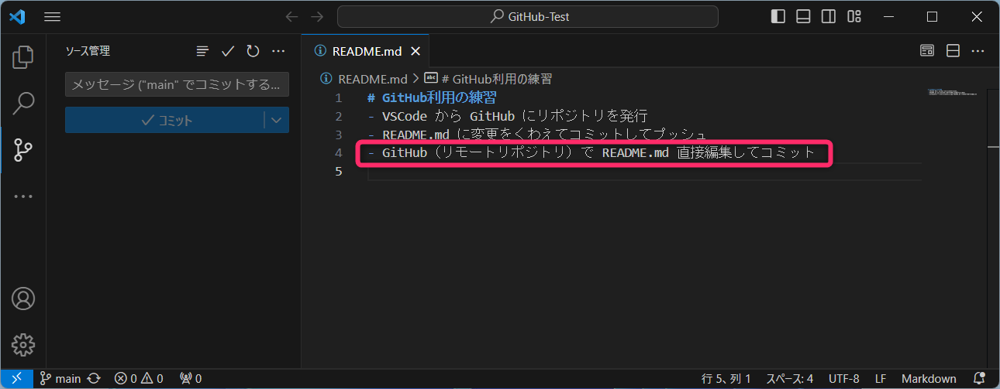
ここでは、ローカルリポジトリとリモートリポジトリの両方から README.md
に対して編集を加えて、変更の統合を行ないました。同様に、チーム開発でアリスとボブが
それぞれに同じファイルに対して編集を加えた際にも、GitHubを通じて変更の統合を行なうことができます
(このようなチーム開発支援に関する機能は次回以降に学びます)。
以上が確認できたらVS Codeを閉じてください。
6 リポジトリの削除
ここまでに作成したリモートリポジトリとローカルリポジトリは、練習用のものなので削除します。
6.1 リモートリポジトリの削除
リモートリポジトリ (GitHubに発行したリポジトリ) を削除してください。
- GitHubで削除する
GitHub-Testリポジトリを開く。 - リポジトリの「Settings」を開く。
- 「General」ページの下部にある「Danger Zone」まで移動する。
- 「Delete this repository」を選択する。
- 警告を読み、画面の指示に従ってリポジトリ名を入力して削除する。
削除対象が自分の GitHub-Test
であることを必ず確認してください。削除したリポジトリを一定期間内に復元できる場合もありますが、常に復元できるとは限りません。詳細は
GitHubの公式手順
を参照してください。
6.2 ローカルリポジトリの削除
PCのローカルストレージに作成したプロジェクトフォルダ (=ローカルリポジトリ) を削除してください。この作業はVS Codeを閉じた状態で行なってください。
削除する前に、VS Codeのターミナルで git status
が実行できることを確認してください。Gitが管理しているプロジェクトには .git
という隠しフォルダがあり、その中にコミット、ブランチ、リモート設定などの管理情報が保存されています。通常の作業中に
.git
だけを削除すると、そのフォルダはGitリポジトリとして認識されなくなるので注意してください。
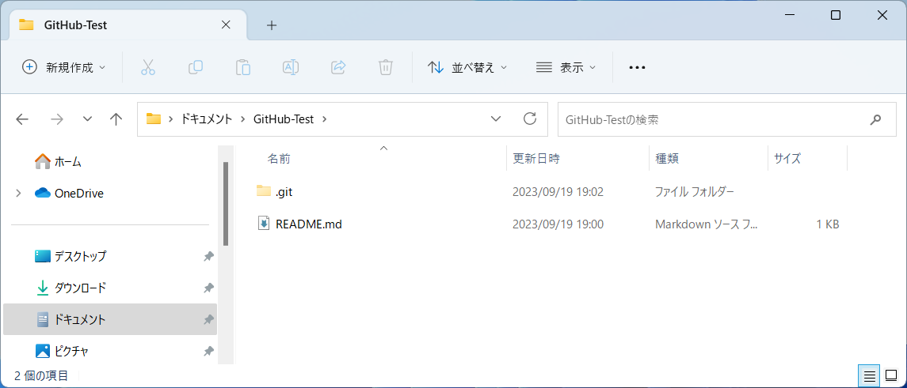
7 定着確認
- GitとGitHubは、それぞれどのような役割を持っているか答えよ。
- 答え: Gitは変更履歴を管理するソフトウェア、GitHubはGitリポジトリの保存・共有・公開・共同開発を支援するウェブサービスです。
- 「作業フォルダ」「ステージング領域」「ローカルリポジトリ」「リモートリポジトリ」の関係を説明せよ。
- 答え: 作業フォルダでファイルを編集し、次のコミットに含める変更をステージング領域へ登録します。コミットすると変更がローカルリポジトリへ記録され、プッシュするとそのコミットがリモートリポジトリへ送信されます。
- ファイルを保存した直後、その変更はローカルリポジトリへコミットされるか、あるいはGitHubに送信されるか答えよ。
- 答え: いいえ。保存しただけでは作業フォルダのファイルが変化した状態です。ローカルリポジトリへのコミットも、GitHubへのプッシュも行われていません。
- ステージングとは、何を選択する操作か説明せよ。
- 答え: 次のコミットに含める変更を選択する操作です。
- コミットした後、プッシュする前の変更はGitHub上で確認できるか、できないか答えよ。
- 答え: 確認できません。プッシュする前のコミットは、まだローカルリポジトリにだけ存在します。
- VS Codeの「変更の同期」は、プルとプッシュをどの順番で行なうか答えよ。
- 答え: 最初にプルし、その後にプッシュします。
- publicリポジトリへコミットしてはいけない情報を3種類以上挙げよ。
- 答え: 個人情報、パスワード、APIキー、アクセストークン、秘密鍵、公開を許可されていない課題や資料などです。
.gitフォルダを削除すると、何が失われるか答えよ。- 答え: コミット、ブランチ、リモート設定など、そのフォルダをGitリポジトリとして管理するための情報が失われます。
.gitフォルダだけを削除した場合、作業フォルダ内の通常のファイルは残ります。
- 答え: コミット、ブランチ、リモート設定など、そのフォルダをGitリポジトリとして管理するための情報が失われます。
8 宿題
次回の授業は、9月25日 (金) 2時限となります。
Git/GitHubの操作は、一度の実習で習得できるものではないので、時間を空けずに記憶が鮮明なうちに、もう一度練習すること が重要です。
8.1 宿題①
再度、プロジェクトフォルダを新規作成し、リモートリポジトリを GitHub に発行、フォルダ内のファイルを変更・保存、変更内容のコミットとプッシュ、GitHub でのファイル変更とコミット、リポジトリの同期、リポジトリの削除という一連の操作・処理を、再度、実行してください (2回目以降は GitHub の認証などの一部操作は不要になります。実際に操作してそれを確認してください)。
繰返し練習するときは、単に同じボタンを押すだけでなく、「現在の変更は4つの場所のどこにあるか」を確認しながら操作してください。最終的には、確認問題に答えながら資料を見ずに一連の操作ができることを目標とします。
次回の授業では、ここまでの git/GitHub 操作は問題なくスムーズにできることを前提として進めます。問題・不具合がある場合は、次回授業の前日までに解決しておいてください (必要に応じて担当教員にアポをとって問題解決してください)。
8.2 宿題②
1年の総合工学実験実習で取り組んだ内容 (PG1_補足資料_ホームページをつくろう) について、改めて取り組み、リポジトリの内容をウェブページとして公開する方法について復習しておいてください。
特に「GitHub Pages として公開する手順」と「最低限のHTML」については十分に理解しておいてください (単に資料を読むだけではなく、実際にPCを操作して機能することを確認してください)。
次回以降、コンフリクトの解消、GitHub からのクローン、ウェブページの作成、GitHub Pages によるウェブページ公開などについて学びます。
- HTML/CSSについては Progate の「HTML & CSS 初級編」などで学んでおくと、以降の授業で役立ちます (情報系の学生として知っておいてください)。
8.3 宿題③
git/GitHub に関するウェブ記事やYouTube動画を閲覧して予習・復習に努め理解を深めてください。様々な資料を読む、動画を見ることで理解が深まります。
Git/GitHubの情報を探す場合の注意点
ウェブや書籍でGit/GitHubの入門情報を探す場合、大きく次の4パターンが存在するので注意してください。
- コマンドラインを使った git/GitHub の操作を説明しているページ/書籍
- SourceTree というソフトを使った 〃
- GitHub Desktop というソフトを使った 〃
- VS Code を使った 〃
この授業では、主に4番目の VS Code を使用する方法で解説していきます (コマンドラインも併用します)。
9 今回の到達目標の再確認
この講義の冒頭では、講義終了時に「次のことができる状態」を目標として示しました。最後に、改めて確認してください。
- 作業フォルダ、ステージング領域、ローカルリポジトリ、リモートリポジトリの違いを説明できる。
- VS Codeでファイルの変更内容を確認し、必要な変更をステージしてコミットできる。
- ローカルのコミットをGitHubに「プッシュ」し、GitHub側のコミットをローカルに「プル」できる。
- publicリポジトリに公開してはいけない情報を判断できる。
資料を見ながら一度操作できただけでは、十分に身に付いたとはいえません。上の各項目について、自分の言葉で説明できないところ、資料を見なければ操作できないところ、なぜその操作が必要なのか分からないところがあれば、まだ到達していない部分です。
9.1 生成AIを使った定着確認
次の各問では、示されたプロンプトに続けて、現在の理解を自分の言葉で説明して生成AIに送信してください。文章をきれいに整えることよりも、今の理解をそのまま言葉にすることが重要です。音声入力を推奨します。
まずは資料を見ずに説明してみましょう。うまく説明できなかった部分や、生成AIから誤り・不足を指摘された部分が、これから復習すべきところです。
9.1.1 定着確認①：Gitとは何か
以下のプロンプトに続けて、「Gitとはどのようなもので、何のために使用するものなのか」を自分の理解で説明してください。
私は Git/GitHub については、まったくの初学者です。このあと、「Gitとはどのようなもので、何のために使用するものなのか」について、現時点で自分なりに理解していることを説明します。私の説明について、正しく理解できている点、誤解や勘違いをしている点、重要なのに説明から抜けている点を、初学者にも分かる言葉で指摘してください。
～～～
（ここに自分の考えを入力）
9.1.2 定着確認②：GitとGitHubの違い
以下のプロンプトに続けて、GitとGitHubの役割の違いと両者の関係を自分の理解で説明してください。GitHubを使わなくてもGitを使用できるのかについても説明に含めてください。
私は Git/GitHub については、まったくの初学者です。このあと、「GitとGitHubは何が違い、どのような関係にあるのか」について、現時点で自分なりに理解していることを説明します。私の説明について、正しく理解できている点、誤解や勘違いをしている点、重要なのに説明から抜けている点を、初学者にも分かる言葉で指摘してください。
～～～
（ここに自分の考えを入力）
9.1.3 定着確認③：変更が保存される4つの場所
以下のプロンプトに続けて、4つの場所の役割と、変更がどのような操作によって各場所へ記録・反映されるのかを自分の理解で説明してください。
私は Git/GitHub については、まったくの初学者です。このあと、「作業フォルダ」「ステージング領域」「ローカルリポジトリ」「リモートリポジトリ」がそれぞれどのような場所で、変更がどのような操作によって各場所へ記録・反映されるのかについて、現時点で自分なりに理解していることを説明します。私の説明について、正しく理解できている点、誤解や勘違いをしている点、重要なのに説明から抜けている点を、初学者にも分かる言葉で指摘してください。
～～～
（ここに自分の考えを入力）
9.1.4 定着確認④：コミット・プッシュ・プル
以下のプロンプトに続けて、ファイルの変更がGitHubへ反映されるまでの流れと、プルの役割を自分の理解で説明してください。
私は Git/GitHub については、まったくの初学者です。このあと、「保存」「ステージ」「コミット」「プッシュ」「プル」はそれぞれ何のための操作で、ファイルを編集したあとの変更がどのようにGitHubへ反映されるのかについて、現時点で自分なりに理解していることを説明します。私の説明について、正しく理解できている点、誤解や勘違いをしている点、重要なのに説明から抜けている点を、初学者にも分かる言葉で指摘してください。
～～～
（ここに自分の考えを入力）
生成AIから誤りや不足を指摘されたら、資料の該当箇所を読み直し、実際に手を動かして確認してください。その後、指摘された内容を踏まえて、もう一度、自分の言葉で説明します。最初の説明から何が変わったのかを確認するところまでが定着確認です。生成AIの説明を読んで終わるのではなく、説明が正しいかを資料や自分の操作でも確かめてください。
Git/GitHubは、簡単ではありません
Git/GitHubは、はっきり言って簡単ではありません。目に見えにくい複数の場所でファイルや変更履歴を管理し、「ステージ」「コミット」「プッシュ」「プル」などの操作を、その意味と結び付けて理解する必要があります。一度説明を読んだり、一度操作したりしただけで、迷わず使えるようになるものではありません。
しかし、簡単ではないからこそ、理解して使えるようになる意味と価値があります。Git/GitHubを理解すれば、変更履歴を安全に残し、失敗したときに過去の状態を調べ、他者と変更を共有しながら開発できるようになります。また、自分が継続して取り組んできた成果を、他者に示すための基盤にもなります。
最初から完璧に理解する必要はありません。分からなくなったら、現在の変更がどこにあるのかを一つずつ確認し、操作と結果を対応させながら繰り返してください。難しい内容を避けるのではなく、時間をかけて理解し、自分で扱える技術にしていきましょう。